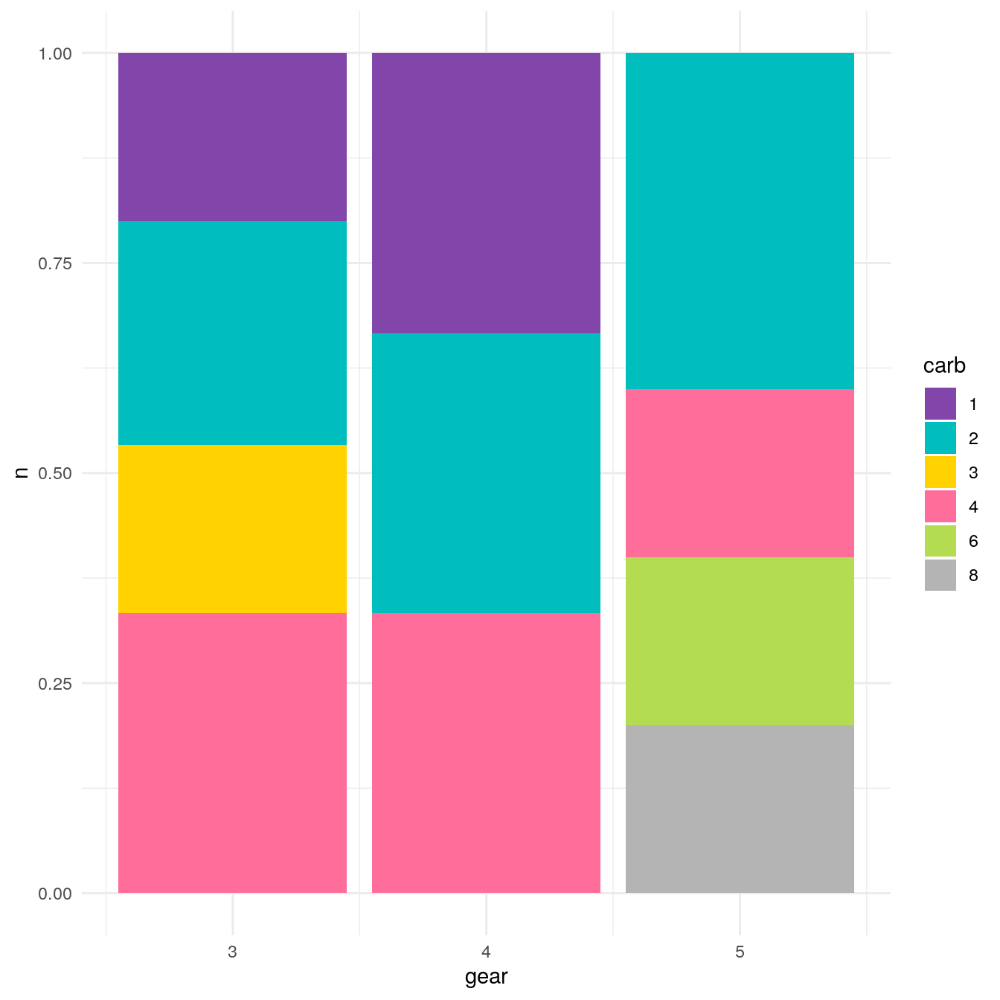
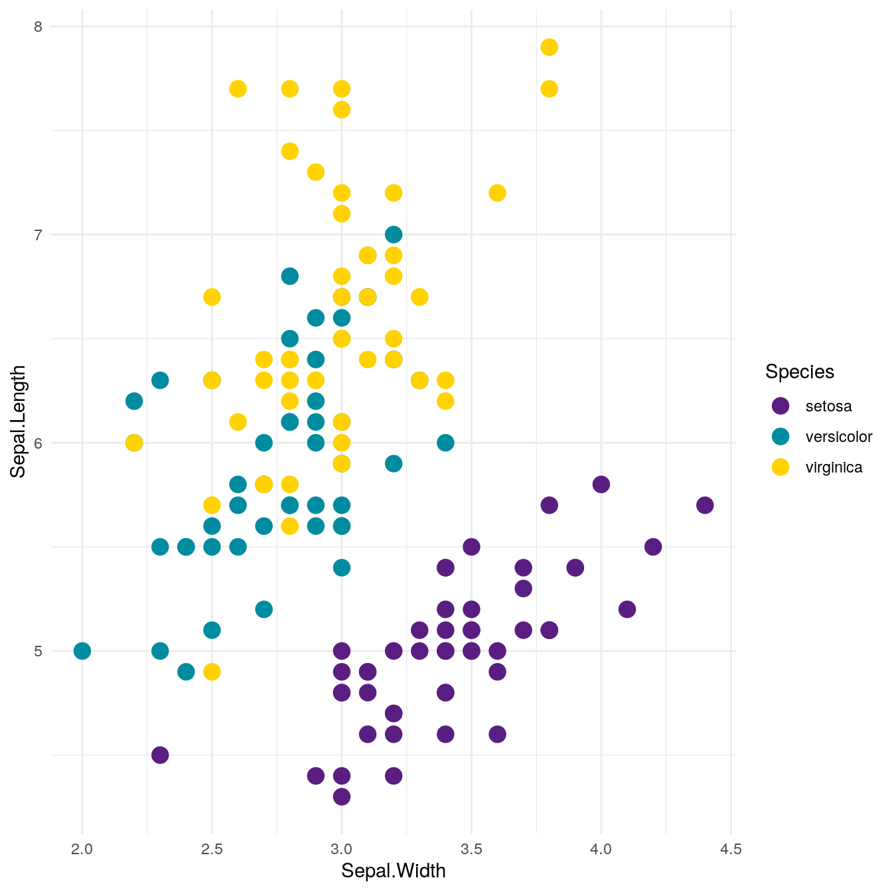
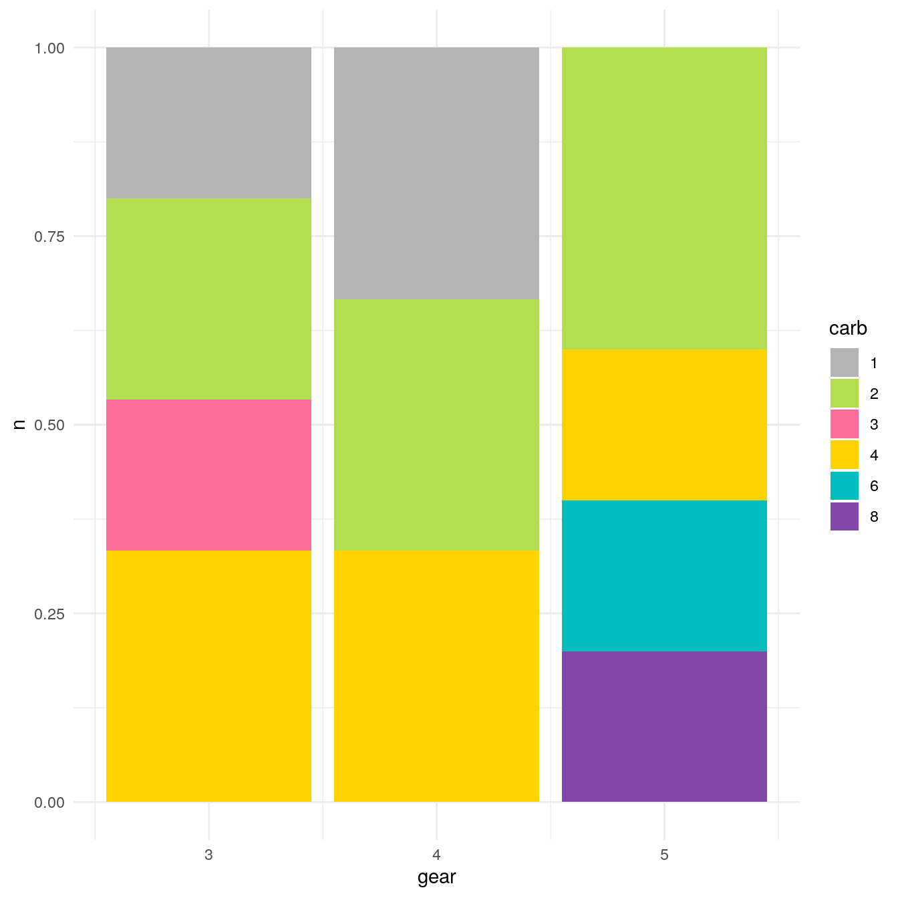
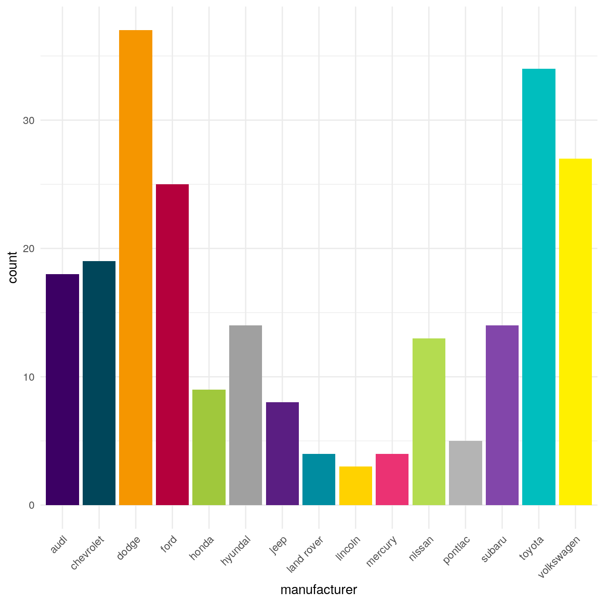

colour palettes
aa-colour-palettes.RmdPalettes
# show complete palette of main colors
show_pal(cols = dreal_main_colors(), nrow = 6, ncol = 3, show_text = TRUE)#> type palette length
#> primary continuous primary 3
#> secondary continuous secondary 3
#> info continuous info 3
#> success continuous success 3
#> warning continuous warning 3
#> danger continuous danger 3
#> continuous continuous continuous 6
#> active discrete active 6
#> normal discrete normal 6
#> light discrete light 6
#> discrete discrete discrete 6
#> discrete2 discrete discrete2 6
#> discrete_long discrete discrete_long 18Functions
Use extraction function directly
#> secondary_active primary_active warning_active danger_active
#> "#3c0064" "#00465a" "#f59600" "#b4003c"
#> success_active info_active secondary primary
#> "#a0c83c" "#a0a0a0" "#5a1e82" "#008ca0"
#> warning danger success info
#> "#ffd200" "#eb3273" "#b4dc50" "#b4b4b4"
#> secondary_light primary_light warning_light danger_light
#> "#8246aa" "#00bebe" "#fff000" "#ff6e9b"
#> success_light info_light
#> "#c8f064" "#d2d2d2"#> primary
#> "#008ca0"#> primary_active danger
#> "#00465a" "#eb3273"# directly in a plot
ggplot(mtcars, aes(hp, mpg)) +
geom_point(color = dreal_cols()[1],
size = 4, alpha = .8) +
ggtitle("Simple graph")Combine colors into palettes
#> [1] "#FFF000" "#FFD200" "#F59600" "#FF6E9B" "#EB3273" "#B4003C"#> [1] "#8246AA" "#00BEBE" "#FFD200" "#FF6E9B" "#B4DC50" "#B4B4B4"Test default palettes in ggplot
# Color by discrete variable using default palette
ggplot(iris, aes(Sepal.Width, Sepal.Length, color = Species)) +
geom_point(size = 4) +
scale_color_dreal_d() +
ggtitle("Figure with scale_color_dreal_d") # Fill by discrete variable using default palette
mtcars %>%
group_by(gear, carb = as.character(carb)) %>%
summarise(n = n()) %>%
ggplot() +
geom_col(aes(gear, n, fill = carb), position = position_fill()) +
scale_fill_dreal_d()
# Color by numeric variable with default palette
ggplot(iris, aes(Sepal.Width, Sepal.Length, color = Sepal.Length)) +
geom_point(size = 4) +
scale_color_dreal_c()# Colour by numeric variable with default palette
ggplot(iris, aes(Sepal.Width, Sepal.Length, color = Sepal.Length)) +
geom_point(size = 4) +
scale_colour_dreal_c()
Test other palettes in ggplot
# Color by discrete variable using default palette
ggplot(iris, aes(Sepal.Width, Sepal.Length, color = Species)) +
geom_point(size = 4) +
scale_color_dreal_d(palette = "normal")
# Fill by discrete variable using default palette
mtcars %>%
group_by(gear, carb = as.character(carb)) %>%
summarise(n = n()) %>%
ggplot() +
geom_col(aes(gear, n, fill = carb), position = position_fill()) +
scale_fill_dreal_d(reverse = TRUE)
# Color by numeric variable with default palette
ggplot(iris, aes(Sepal.Width, Sepal.Length, color = Sepal.Length)) +
geom_point(size = 4) +
scale_color_dreal_c(palette = "secondary", reverse = TRUE)# Fill by discrete variable with different palette + remove legend (guide)
ggplot(mpg, aes(manufacturer, fill = manufacturer)) +
geom_bar() +
theme(axis.text.x = element_text(angle = 45, hjust = 1)) +
scale_fill_dreal_d(palette = "discrete_long", guide = "none")